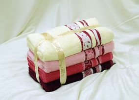
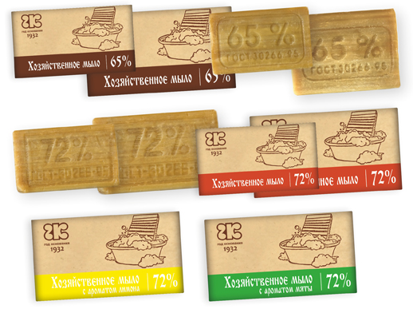

Good to know
-

Since ancient times, bamboo was used for construction, decoration and manufacture of various products used in everyday life. In the late 20th century bamboo experienced rebirth, as Japanese scientists managed to create it as a new innovative material – bamboo fiber, which became widely used in the textile industry for the manufacture of fabrics. Today bamboo fabric is the most promising material for making clothes, underwear, pillows, blankets, towels and other knitted fabrics made of bamboo.
-

Household soap is one of the most effective means of hygiene due to its microbiological properties. Benefits of household soap has long been known. After all, this yellow-brown bar of soap is able to wash not only bacteria, but even fuel. This soap washes even the oil paint. Especially for household soap of 72% fat concentration.
Household soap remains the only antiallergic organic product of modern chemistry. Composition of household soap is very simple. It only consists of fatty acids and sodium. And based on this, by introducing chemical dyes and perfumes, more soap is made.